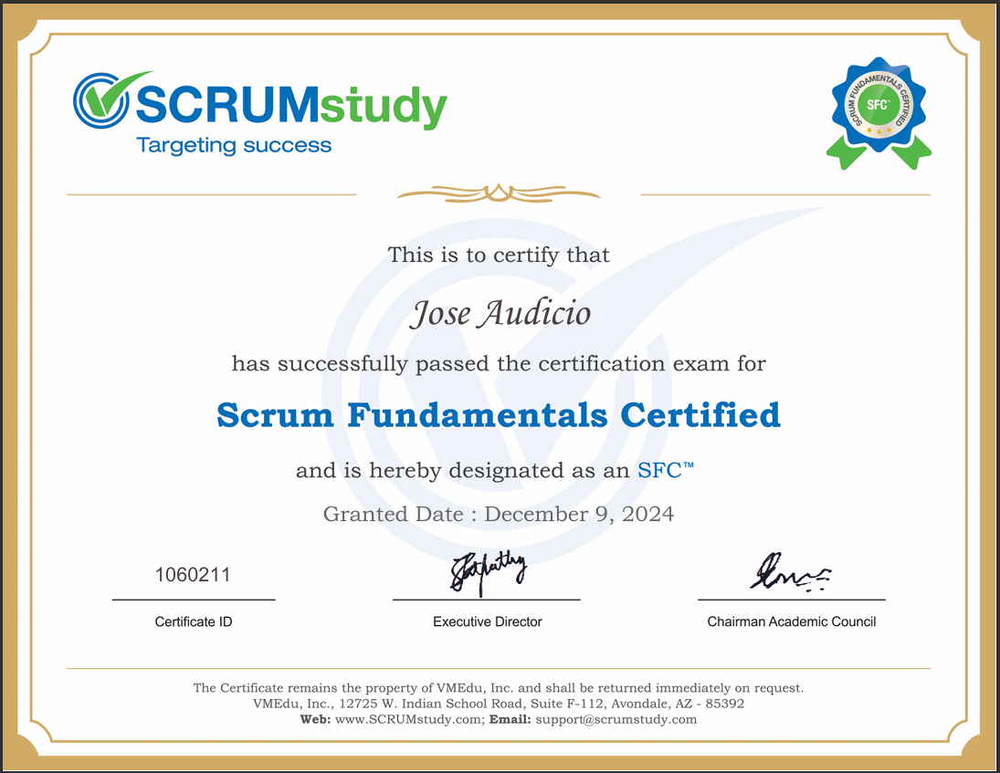

Education
Electromechanical Engineering
Graduated in 2018 from the National Technological University, Resistencia Regional Faculty.
View Diploma
Scrum Methodology
Certification issued by SCRUMstudy, which accredits basic knowledge of the Scrum methodology, its roles, events, and artifacts. It provides a general understanding of the agile framework for project management and teamwork.
View Certificate
Web Development
Course focused on web development using HTML, CSS, Git, and GitHub. Certification issued by the Undersecretariat of Industry, Employment, and Commerce of the Ministry of Production and Sustainable Development of the Province of Chaco, with the support of companies associated with the program, such as Globant, Polo IT, and ECOM Chaco S.A.
View Certificate